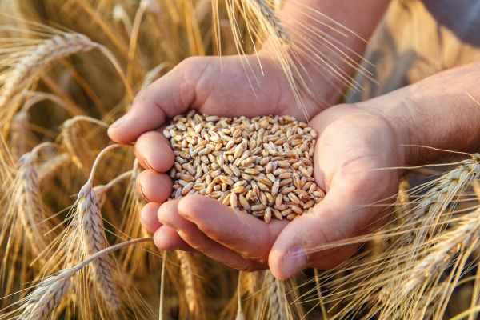
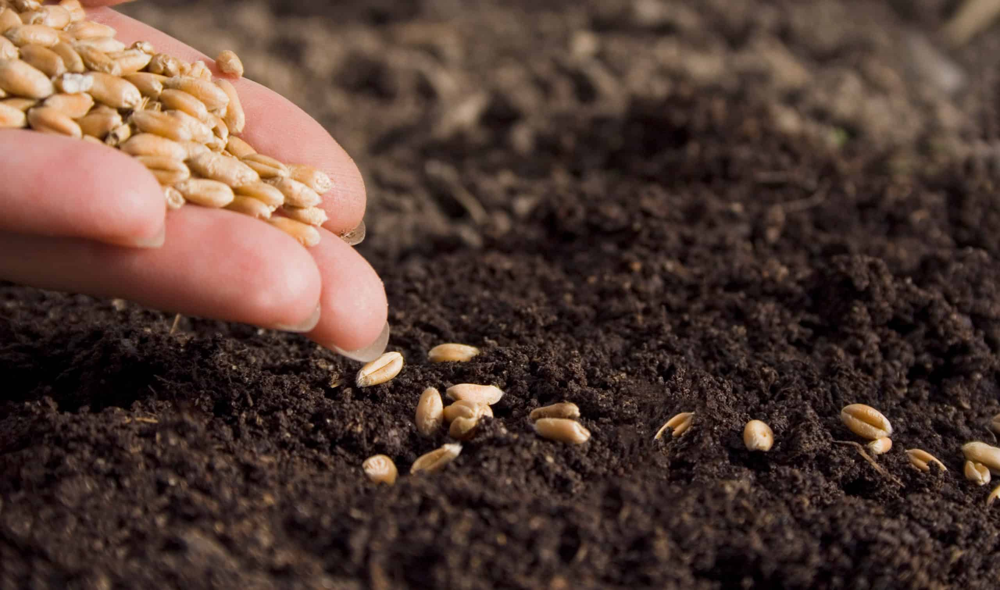

Introdução:
O trigo (Triticum aestivum, Triticale) é o terceiro cereal com a maior produção e distribuição do mundo, ficando atrás somente do arroz e do milho. Possuindo variedade de grãos, classificados de acordo com as condições climáticas do ambiente e do solo e de acordo com o período do ano em que se crescem.
O grão do trigo possui cores e tamanhos variáveis, apresentando formato oval com extremidades parcialmente arredondadas e pontiagudas. E é composto por três partes, o gérmen (onde localiza-se a parte embrionária do grão), a casca (um sistema de proteção do grão, que evita o ataque de potenciais agressores que poderão afetar o grão), e o endosperma (onde é localizado os nutrientes para o desenvolvimento do embrião). Essas partes não se distribuem uniformemente no grão, podendo, por esse motivo, gerar características diferentes para cada produto derivado do trigo, especialmente na produção da farinha de trigo.
O trigo, naturalmente, não possui raízes na américa do sul, primordialmente falando, sua origem veio de Portugal em meados do século XVI (aproximadamente em 1534), no período colonial.
Por possui solo e clima extremamente favorável para o cultivo dessa gramínea, se tornou, culturalmente, um dos maiores tipos de lavoura encontradas no país.
Sendo estimuladas o seu plantio e cultivo em tempos posteriores, onde, se tornou algo muito comum e de extrema importância para o país e sua economia no geral.
Origem do trigo no Brasi
O trigo, naturalmente, não possui raízes na américa do sul, a sua vinda ao Brasil remete-se à Portugal em meados do século XVI (aproximadamente em 1534), no período colonial, trazido por Martim Afonso de Souza.
O Brasil possui solo e clima extremamente favorável para o cultivo dessa gramínea, se tornando, culturalmente, um dos maiores tipos de lavoura encontradas no país. Sendo estimuladas o seu plantio e cultivo em tempos posteriores, onde, se tornou algo muito comum e de extrema importância para a economia no geral.
Ir para o próximo tópicoO calendário no plantio do trigo e suas variações

A princípio, devemos determinar o tipo de trigo que se deseja colher, havendo duas possibilidades, sendo, as quais, o trigo de primavera e o trigo de inverno.
O trigo de inverno é a variedade de maior preferência, no geral, pois, trata-se de um grão com poder nutritivo maior, possuindo menor recorrência de ervas daninhas devido à época de seu plantio.
A melhor época para plantio desse grão é no outono, cerca de seis a oito semanas, antes das quedas de temperatura, possibilitando o melhor crescimento da plantação, e sua colheita deverá ser feita no início da primavera onde ocorre o aumento da temperatura.
Já, o trigo de primavera, deve ser plantado no início da primavera e colhido o mais breve possível, no outono, pois, ocorre que em regiões onde os invernos são mais rigorosos, ou seja, o frio é mais elevado, o plantio do grão é prejudicado, inviabilizando o plantio desse tipo de grão.
O trigo de primavera deve ser plantado logo após o inverno, o mais breve possível, após o manuseio do solo, também deve-se ter em mente que o trigo demonstrará um melhor crescimento ao ser plantado em temperaturas amenas entre 20 °C à 25 °C.
Ir para o próximo tópicoO calendário lunar do trigo

Sabemos que a força gravitacional exercida pela lua altera o movimento das seivas na plantação de uma lavoura, recomenda-se que o trigo seja cultivado durante a lua crescente, entre o segundo e terceiro dia após o início de sua fase lunar, que promove na planta um ótimo desenvolvimento dos seus grãos, por conta da melhor distribuição de nutrientes em sua estrutura molecular.
Considerando as quatro fases principais da lua: lua nova, quarto crescente (lua crescente), lua cheia e quarto minguante (lua minguante).
- Lua nova: nessa fase, a lua apresenta uma gravidade significativa, fazendo com que a água se retenha com maior facilidade no solo, fazendo com que as sementes plantadas nesse período aumentem de volume, incham e se rompem com maior facilidade, no entanto, a seiva das plantas concentra-se majoritariamente no caule. Por esse motivo, pode não ser tão aconselhável a semeadura de algum dos cultivares do trigo nesse período.
- Lua crescente: nessa fase, a lua possui uma força gravitacional de menor impacto na terra, sua força gravitacional é inferior, entretanto a luz refletida por ela pode ser mais intensa, por essa razão, essa fase da lua permite o crescimento foliar da planta de forma vigorosa para a planta.
- Lua cheia: nessa fase, é caracterizado o momento onde ocorrerá a maior concentração de seivas nas plantas, principalmente em seus rebentos e folhas.
- Lua minguante: após o pico da lua cheia, esse estágio da lua, tem efeito máximo sobre a copa das plantas, fazendo com que a lua diminua de tamanho e a energia emitida encontra-se em maior concentração nas raízes, tal como, na lua nova, sendo outro momento desaconselhável o plantio e semeadura de qualquer cultura de grãos. Essa é a melhor fase para aproveitar para corrigir alguns problemas na lavoura, tais como pragas e doenças que podem afetar as plantas, e nesse momento deve-se ficar atento às ervas daninhas, ou um momento para se iniciar o preparo do solo para posterior plantação.
Ir para o próximo tópico
O preparo do trigo
É importante dizer que, independentemente do tipo de trigo escolhido, o preparo do local será o mesmo, sendo o trigo uma planta de baixo porte e, que necessita de pelo menos 8 horas de luz solar ao dia. Existem alguns pré-requisitos a serem considerados durante a escolha do melhor local, devendo-se levar em conta locais amplos e que não possuam árvores ou construções ao redor da lavoura e, que seja um terreno plano e limpo para que a plantação possa se desenvolver da melhor forma.
A escolha de cultivar do trigo deve ser de acordo com a região em destaque, que se pretende realizar o plantio, portanto, deve-se considerar a produção da lavoura em locais próximas a usinas de grãos, ou regiões comerciais onde seja possível a venda do produto, por esse motivo é demandado o estudo da região ao redor para que seja possível encontrar o melhor local entre custo e benefício, tanto para a venda de produtos, tanto para a compra de produtos de insumos agrícolas em preços mais favoráveis, é necessário, portanto, verificar a demanda desse tipo de cereal, se houver alta demanda, é provável que haverá lucros maiores e satisfatórios ao final de cada safra.
Ir para o próximo tópico
A escolha das sementes de acordo com a região do plantio
Focando no trabalho da Embrapa, podemos constatar que foi gerado novos exemplares manipulados geneticamente da cultura do trigo de acordo com o clima e ambiente do estado em que se pretende realizar o plantio, sendo eles, cultivares do trigo favoráveis a regiões mais frias no Sul, temos exemplares do tipo BRS Belajoia, BRS Pastoreio, BRS Reponte, BRS Tarumã e cultivares do tipo BRS 327 e BRS 374 em regiões de clima ameno na região Centro-Sul com clima ambiente favorável entre 18ºC à aproximadamente 30ºC no verão, e no inverno, chegando a taxas inferiores à 10ºC, temos os cultivares do tipo BRS Sanhaço, BRS Sabiá, BRS Jacana, BRS Atobá e BRS Gralha-Azul. Tais cultivares são favoráveis à climas relativamente mais frios.
Já para as áreas de Cerrado, que o clima apresenta estações bem definidas, sendo elas verões chuvosos e invernos secos, a temperatura é variável com climas amenos em regiões com latitudes mais altas, e maiores temperaturas em latitudes mais baixas, o cerrado, de acordo com a classificação tradicional de Köppen-Geiger, é do tipo Tropical Chuvoso (AW), seus cultivares do grão de trigo são as do tipo BRS 254, BRS 264, BRS 394 e BRS 404. (Fonte: Cultivares de Trigo, Embrapa. Acessado em 21 maio de 2022)
Na Embrapa, os genótipos com elevada taxa de produtividade fornecem maiores resistências no acamamento das sementes e maiores resistências a doenças que podem afetar o desenvolvimento da planta. Tais pesquisas têm por objetivo gerar informações técnicas para manejo de novos genótipos do trigo, visando práticas mais adequadas no manejo desses cultivares modificados.
Ir para o próximo tópico
Dicas para o plantio do trigo

Para que seja possível garantir um bom condicionamento no plantio do trigo, deve-se levar em consideração alguns quesitos:
- SOLO: assim como uma casa, é necessário, primeiramente, garantir a base da construção, sendo assim, não é muito diferente ao realizar o plantio, portanto a base, ou no caso, o solo é de extrema importância, sendo necessário analisar o solo em que será feito o plantio, garantindo fertilização do solo para resistir a pragas indesejadas e doenças que possam interferir no crescimento da planta.
- ADUBAGEM: assim como o processo anterior, a adubagem do solo é importante para cultivares iniciais, quando não se tem o solo formado previamente por outras safras, sendo, portanto, de extrema importância garantir a adubagem do solo para que as plantas do trigo possam ter todos os nutrientes necessários para o desenvolvimento da planta, a adubagem é feita geralmente com o potássio, fósforo ou nitrogênio, sendo, portanto, o último mais recomendado para o plantio, pois garante melhores resultados. A dose deve variar de acordo com a matéria orgânica presente no solo e, também, de acordo com as condições climáticas do ambiente.
- PERÍODO DE SEMEADURA: pelo fato de que os cultivares de trigo estão diretamente relacionados com o clima, é de extrema importância saber o período correto para realizar a semeadura do cultivar escolhido, para isso é necessário o conhecimento prévio do cultivar escolhido, o melhor momento para se iniciar a semeadura.
Após a preparação do solo, devemos determinar o tipo de cultura que será plantada, havendo duas possibilidades intrínsecas, sendo, as quais, o trigo de primavera e o trigo de inverno.
O trigo de inverno é a variedade de maior preferência, no geral, pois trata-se de um grão com poder nutritivo maior, possuindo menor recorrências de ervas daninhas devido à época de seu plantio. A melhor época para o plantio desse grão é no outono, e sua colheita deverá ser feita no início da primavera.
Já, com relação ao trigo de primavera, deverá ser plantado, o mais breve possível, ao fim do inverno, e bem no início da primavera, sendo colhido posteriormente no outono.
Ir para o próximo tópicoDicas para o manuseio do trigo

No caso de secas, ou seja, uma ou mais semanas sem chuva, será necessário a irrigação da lavoura, caso não ocorra tal evento, desconsidere a irrigação como algo estritamente necessário, mantenha a lavoura livre de ervas daninhas, devendo ser feita sua remoção periodicamente e, principalmente fique atento às pragas na lavoura, como larvas e insetos.
Com o uso de um arado ou um ancinho o solo deverá ser lavrado em uma profundidade de mais ou menos 15cm e, após, despejar adubo sobre o solo. Ao realizar a semeadura manualmente com o uso de um espalhador de sementes, o plantio do trigo deverá ser feito em uma distância média de aproximadamente 3cm por metro quadrado entre cada semente, após a semeadura, as cubra com o solo já preparado, em uma camada fina entre 5 e 7cm, após isso, regue toda a plantação saturando todo o solo com água. E mantenha periodicamente a irrigação do solo, até a germinação das sementes.
Caso a lavoura não possua sistema de irrigação, deverá ficar atento com as secas, cerca de uma ou duas semanas sem chuvas, devendo sempre realizar a irrigação manual de todo o campo semeado, mantendo uma boa quantidade de água em todo o solo, e mantenha, também, a área de plantio livre de ervas daninhas e verifique constantemente se há pragas, tais como larvas e insetos na lavoura, que possam danificar o plantio.
Ir para o próximo tópico
As fases do ciclo de vida do trigo
| Existem 5 fases no ciclo do trigo sendo elas: |
|---|
| Plântula |
| Nada mais é que a germinação da planta, entre 5 à 7 dias, até o crescimento de suas 3 primeiras folhas (cerca de 12 a 16 dias) | Perfilhamento |
| O aparecimento de mais folhas e o surgimento dos perfilhos, tendo entre 7 e 8 perfilhos, este processo tem uma duração média entre 15 à 17 dias. | Alongamento |
| Surgimento do primeiro nó de colmo, crescimento expoente do caule e o aparecimento da folha bandeira, este processo tem uma duração de 15 a 18 dias. | Espigamento |
| Surgimento da espiga, floração, frutificação e início do desenvolvimento do grão, este processo tem uma duração média entre 12 à 16 dias. | Maturação |
| Finalização do desenvolvimento do grão, ocorrendo sua maturação e, também, a secagem das folhas e espiga, este processo tem uma duração média entre 30 à 40 dias. |
A coleta do trigo após seu período de maturação

A colheita do trigo pode ser feita por meio de tratores colheitadeiras que vão cortar e descascar o grão, ou manualmente cortando-se o trigo maduro em feixes que após a secagem ao sol será batido manualmente, esse processo é chamado de debulha ou trilha, existem também trilheiras mecânicas que aceleram este processo.
Passando pelo processo de secagem onde a umidade do grão será reduzida, ocorrendo por meio da luz solar ou secadores modernos, então finalmente o trigo será armazenado em um local com baixa umidade e temperatura controlada para que não haja a perda do grão por meio de insetos e fungos.
A colheita, caso ocorra tudo normalmente, será feita entre 110 à 120 dias após o plantio da lavoura.
Voltar ao topo